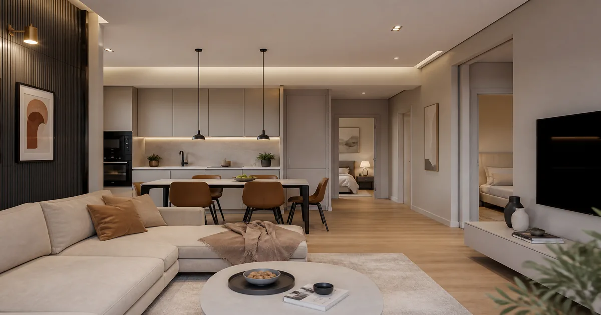

In sintesi
Nella micro-zona Imma (Limena, PD) l'offerta di abitazioni a prezzi sostenibili resta scarsa rispetto alla domanda pendolare verso Padova. Incrociare OMI ADE, stock reale e pre-qualificazione mutuo prima delle visite. Outlook 2027: previsione editoriale, non certezza OMI.
Risposta diretta: nella micro-zona residenziale Imma, nel comune di Limena (Padova), l'offerta di abitazioni in vendita a prezzi accessibili per famiglie e pendolari resta scarsa rispetto alla domanda. Il rapporto tra richieste e annunci disponibili è fortemente sbilanciato verso l'acquirente «in ritardo», e — secondo la nostra analisi di mercato locale — la tensione non si attenua nel breve periodo, con proiezione positiva della domanda anche per il 2027.
Distinzione editoriale: Fatto — quotazioni OMI comunali, dati macro ADE/ISTAT. Osservazione studio — tempi di commercializzazione e rapporto richieste/offerta su casistica Righetto. Previsione — persistenza tensione 2027, scenario alternativo se tassi o successioni cambiano.
*Stime qualitative da casistica Righetto sul comune di Limena — non dato ISTAT/OMI per micro-zona.
Cosa può fare Righetto
Il quesito: Compro o vendo in zona Imma: come muovermi?
- Immobili in vendita — Alert e catalogo aggiornato Limena e cintura (immobili vendita)
- Valutazione gratuita — Prezzo allineato a OMI e comparabili chiusi (servizio valutazioni)
- Mutuo prima casa — Pre-qualificazione prima della visita (mutuo Padova)
- Hub proprietari — Guide vendita e documenti Limena (proprietario immobile)
Mediazione concordata in sede — nessun listino online. Tel. 049.8843484 · consulenza gratuita.
Dove si colloca la zona Imma a Limena
Limena è un comune della prima cintura nord-ovest di Padova, con circa 8.700 residenti e collegamenti rapidi verso il capoluogo via SR308 e rete bus. La zona Imma — nomenclatura usata localmente per un tratto residenziale tra il nucleo storico (Via Roma, servizi, scuole) e le direttrici verso Ponterotto e Taggì di Sotto — concentra villette, bifamiliari e piccoli condomini degli anni Ottanta-Duemila.
Non va confusa con il centro commerciale o con le grandi lottizzazioni industriali: è un tessuto abitativo «di passaggio» per famiglie che vogliono metrature e verde senza allontanarsi eccessivamente da Padova. Per il profilo completo del comune, vedi la scheda zona Limena e l'analisi mercato immobiliare Limena 2026.

Pochi immobili, molte richieste: cosa significa concretamente
Quando diciamo che ci sono pochi immobili a prezzi sostenibili, non affermiamo che Limena sia «vuota» di annunci: significa che la fascia di prezzo che le famiglie considerano sostenibile (incrocio mutuo, reddito, spese) si sovrappone a un sottoinsieme ristretto dell'offerta totale.
Nel Q1 2026, a livello nazionale, l'Osservatorio ADE ha registrato un incremento delle transazioni residenziali dell'ordine del +4,4% con prezzi medi in crescita — segnale macro che nel Padovano si traduce, nelle zone di cintura, in competizione più serrata su trilocali e villette (approfondimento: domanda vs offerta Padova 2026).
Il rapporto domanda/vendita nella pratica
In agenzia osserviamo — per Limena e micro-aree come Imma — un rapporto qualitativo prossimo a più richieste che proposte omogenee su immobili correttamente valutati. Non pubblichiamo un ratio ufficiale per singola via (non esiste in OMI), ma il pattern è ricorrente: appena esce un trilocale in buono stato con box, arrivano diverse visite nella prima settimana.
Tempi medi di commercializzazione per immobili ben prezzati nel comune, secondo la nostra casistica, restano nell'ordine di 75–110 giorni — allineati a quanto riportato nella guida generale al mercato limenese. Le eccezioni «sostenibili» si vendono più in fretta.
Prezzi sostenibili: come leggerli senza auto-ingannarsi
«Prezzo sostenibile» non è un tag OMI: è la capacità dell'acquirente di sostenere rata mutuo, spese e ristrutturazione eventuale. Le fasce ufficiali OMI per Limena (minimo–medio–massimo per tipologia) vanno scaricate dal portale ADE al momento della trattativa — aggiornamento semestrale, dati al 31 dicembre del semestre di riferimento.
La nostra guida al mercato Limena indica, a titolo di casistica studio su incarichi conclusi, valori medi indicativi tra 1.600 e 2.400 €/mq a seconda di tipologia e stato, con dinamica annua nell'ordine del +4,2% nel ciclo recente. Sono elaborazioni di agenzia da incrociare con OMI — non sostituto delle tabelle istituzionali.
| Segmento | Domanda tipica | Offerta zona Imma | Nota |
|---|---|---|---|
| Trilocale 90–110 mq con box | Famiglie pendolari | Scarsa sotto fascia media OMI | Uscita rapida se APE e prezzo allineati |
| Bilocale ristrutturato | Coppie, single | Moderata | Competizione con Rubano/Vigonza |
| Villetta con giardino | Seconda fase familiare | Molto limitata | Prezzo spesso sopra budget prima casa |
| Nuovo 2027 (centro/frazioni) | Acquirenti qualificati | In arrivo ma pre-fissata | Consegne estive 2027 su più cantieri comunali* |
*Riferimento a annunci pubblici di operatori e costruttori nel comune di Limena (2026) — verificare stato lavori e prezzi al momento dell'offerta.

Perché lo squilibrio non è un fenomeno passeggero
Quattro fattori strutturali spiegano la persistenza del disequilibrio:
- Vicinanza a Padova — Limena assorbe domanda «spillover» quando il capoluogo offre poco nelle fasce medie (confronto Limena vs Padova centro).
- Patrimonio non espandibile — nella zona Imma non ci sono grandi aree edificabili; l'offerta cresce per unità singole o piccoli interventi, non per volumi massivi.
- Proprietari che non vendono — tasso di turnover basso su abitazioni occupate da famiglie stabili; l'offerta «nuova» dipende da successioni, trasferimenti lavorativi o riposizionamenti.
- Costo del credito ancora selettivo — le famiglie restano in mercato ma con budget più rigidi; ciò accentua la competizione sul sottoinsieme «sostenibile» (contesto tassi: Euribor e mutui Padova).
Cosa dicono le fonti istituzionali (e cosa no)
L'OMI descrive fasce di prezzo per zona omogenea del comune, non per singola via della zona Imma. L'ISTAT pubblica indici temporali aggregati sulle abitazioni (istat.it) utili per capire se il mercato nazionale accelera o rallenta, non per fissare il prezzo del vostro trilocale. FIMAA e osservatori di settore segnalano nel Padovano domanda sostenuta sul residenziale — coerente con quanto vediamo in sede.
Regola Righetto: se non c'è fonte verificabile, non inseriamo il dato. Per micro-zone come Imma usiamo comparabili reali, OMI comunale e storico trattative.
Trend 2027: perché la tensione può proseguire
Previsione (analisi Righetto, settembre 2026): anche nel 2027 il mercato residenziale nella zona Imma e nel comune di Limena resterà caratterizzato da domanda superiore all'offerta nelle fasce medie, per tre motivi convergenti.
Primo: diversi complessi residenziali annunciano consegne nella seconda metà del 2027 (centro e frazioni) — incrementano lo stock ma spesso a prezzi già allineati al nuovo edificato (classe A/A4), quindi non sempre in fascia «sostenibile» per la prima casa. Secondo: la domanda pendolare verso Padova è demograficamente stabile (famiglie, lavoratori settore logistico-industriale del Padovano). Terzo: senza ampliamenti urbanistici significativi nel tessuto Imma, l'offerta «usato» resterà il segmento più contendibile.
Scenario alternativo (minoranza): un raffreddamento dei tassi e un aumento delle vendite da successione potrebbero ampliare l'offerta e ridurre la pressione — va monitorato con OMI di primavera 2027 e stock portali.

Trilocali, bilocali e villette: dinamiche diverse in zona Imma
Il segmento più contendibile resta il trilocale 90–110 mq con box: famiglie pendolari con mutuo pre-approvato e budget definito. I bilocali ristrutturati attirano coppie e single ma competono con Rubano e Vigonza — serve differenziare con APE, spese condominiali contenute e posizione rispetto a fermate bus SR308. Le villette con giardino hanno domanda più selettiva: spesso fuori budget prima casa, più adatte a seconda fase familiare o riposizionamento da proprietari locali.
Il nuovo edificato 2027 (centro Limena e frazioni) incrementa lo stock ma non sempre nella fascia «sostenibile»: classe A/A4 e finiture premium orientano prezzi verso acquirenti qualificati. Chi cerca il primo appartamento sotto fascia media OMI resta concentrato sull'usato ben tenuto — pochi annunci, alta competizione.
Nuovo vs usato: cosa cambia per il budget
Nel nuovo il prezzo è spesso allineato al costo di costruzione e margini promotore; nel usato il prezzo dipende da comparabili chiusi, stato impianti e appeal immediato. Entrambi vanno incrociati con perizia mutuo: un trilocale usato in Imma «sostenibile» al listino può risultare fuori perizia se il mercato recente non giustifica la cifra richiesta.
Successioni, turnover e offerta «latente»
Parte dell'offerta futura non compare sui portali finché non si conclude una successione o un trasferimento lavorativo. Questo rende imprevedibile lo stock mensile: un trimestre con pochi annunci può essere seguito da piccoli picchi senza cambiare la struttura domanda > offerta. Monitorare OMI semestrale e dialogare con agenzie locali resta più utile che attendere un «crollo» generalizzato dei prezzi senza segnali macro.
Cosa possono fare acquirenti e proprietari
Per chi compra
- Impostare alert su immobili in vendita e valutare anche Rubano/Vigonza con criteri omogenei (cintura Padova).
- Pre-qualificare il mutuo prima della visita (mutuo prima casa Padova).
- Leggere gli annunci con checklist anti-fregatura (leggere annunci Limena).
- Definire budget totale mensile (rata + spese + spostamenti) — guida mutuo under 36 2027 se under 36.
- Visitare con documenti catastali e APE già richiesti all'agente — evita due diligence ripetute.
Per chi vende in zona Imma
- Allineare il prezzo a OMI + comparabili chiusi — sovraprezzo allunga i tempi (valutazione gratuita).
- Documentare APE, planimetria e spese condominiali prima del marketing.
- Mediazione e compenso si concordano in sede nel mandato — nessun listino percentuale online.
- Preparare immobile per visite rapide — annunci sostenibili si chiudono in settimane se prezzo e stato sono allineati.
- Valutare mandato esclusivo per evitare annunci duplicati con prezzi incoerenti (mandato esclusivo).
Collegamenti utili nel percorso acquisto Limena
Per profilo comune: guida acquisto Limena, scegliere agenzia Limena, Limena vs Padova centro. Per venditori: vendere casa Limena.
Geografia operativa: Imma, Ponterotto, centro Limena
La zona Imma non coincide con una frazione catastale: è un riferimento operativo tra il centro storico limenese (Via Roma, servizi, scuole) e le direttrici verso Ponterotto e Taggì di Sotto. Chi cerca «Imma» sui portali deve spesso allargare la ricerca a Limena intero e filtrare per tipologia, metratura e budget — gli annunci non sempre riportano il microtoponimo.
Il pendolarismo verso Padova passa prevalentemente da SR308 e rete bus: calcolate tempi reali negli orari di punta, non solo distanza chilometrica. Un trilocale «sostenibile» che costa 45 minuti di spostamento quotidiano può erodere il risparmio rispetto a soluzioni più vicine al capoluogo — dipende dal vostro contratto di lavoro e dalla tolleranza al commuting.
Confronto con comuni limitrofi (Rubano, Vigonza, Cadoneghe)
La domanda spillover da Padova non colpisce solo Limena: Rubano e Vigonza competono sugli stessi profili famiglia/pendolare. Prima di restringere la ricerca a Imma, confrontate annunci omogenei (stato, APE, box) nei comuni limitrofi con lo stesso budget mutuo. A volte un bilocale ristrutturato in comune adiacente resta in fascia sostenibile quando a Limena no — e viceversa per villette con giardino.
Righetto copre 101 comuni del Padovano: possiamo impostare ricerche parallele e alert su più zone con criteri identici, evitando di perdere settimane su un solo micro-perimetro.
| Comune | Profilo tipico | Nota per acquirente budget medio |
|---|---|---|
| Limena (zona Imma) | Villette, trilocali anni 80–2000 | Offerta sostenibile limitata — competizione alta |
| Rubano | Condomini e villette cintura | Confrontare trilocali con box e APE |
| Vigonza | Residenziale famiglie | Spostamenti verso Padova simili — verificare tempi reali |
| Cadoneghe | Mix residenziale | Stock diverso — utile ampliare alert portali |
Monitoraggio semestrale: cosa guardare nel 2026–2027
- OMI ADE — aggiornamento primavera/autunno per Limena e tipologia.
- Stock portali — numero annunci attivi per trilocale/bilocale, non solo prezzo medio.
- Tempi di vendita — comparabili chiusi in zona (agenzia + visure dove disponibili).
- Contesto mutuo — pre-qualificazione aggiornata se tassi BCE cambiano (Euribor Padova).
La previsione 2027 resta qualitativa: strumenti istituzionali descrivono il passato recente e le fasce ufficiali, non garantiscono prezzi futuri per singola via.
FAQ operative sul mercato Imma (non duplicate)
Conviene comprare «a qualsiasi prezzo» per paura di perderlo? No — un acquisto fuori perizia mutuo o sopra OMI massimo senza equity aggiuntiva blocca il finanziamento. Meglio perdere un annuncio che firmare compromesso non sostenibile.
Il proprietario può contare su rialzi automatici ogni anno? No — OMI e transazioni recenti definiscono fasce credibili. Rialzi listino senza comparabili allungano i tempi anche in mercato domanda > offerta.
Serve per forza un'agenzia locale? Non è obbligatorio per legge, ma chi conosce Limena dal 2000 (Righetto, Via Roma 96) filtra visitatori, allinea prezzo e gestisce trattative con notai e banche abituali nel territorio — riduce attrito operativo.
Trasparenza editoriale e limiti di questa analisi
Non pubblichiamo conteggi ufficiali di annunci «sostenibili» per via Imma: non esistono in OMI/ISTAT. I rapporti richieste/offerta e i giorni di vendita citati derivano da casistica Righetto sul comune di Limena — utili come segnale operativo, non come statistica nazionale. Le fasce €/mq 1.600–2.400 sono elaborazioni di agenzia da incrociare con tabelle ADE al momento della trattativa.
Per approfondimenti correlati: domanda vs offerta Padova, mercato Padova 2026, comprare casa Padova. Aggiornamento previsto dopo pubblicazione OMI semestrale successiva.
Checklist visita in zona Imma (acquirente)
- Chiedere visura catastale e planimetria conforme prima del secondo sopralluogo.
- Verificare APE e classe energetica — impatto su mutuo e spese future.
- Leggere ultimi due verbali condominiali — lavori straordinari in arrivo?
- Controllare pertinenze (box/cantina) con subalterni catastali.
- Calcolare spostamento verso Padova negli orari che userete davvero.
- Confrontare con almeno un comparabile chiuso in Limena negli ultimi mesi (OMI + agenzia).
Per venditori: stessa checklist al contrario — avere documenti pronti riduce attrito e accelera trattativa su immobili in fascia sostenibile.
Contattaci per alert personalizzati su Limena e cintura: tel. 049.8843484, sede Via Roma 96 — oppure richiedi consulenza gratuita con zona, budget e tipologia desiderata.
Gruppo Immobiliare Righetto opera dal 2000 su 101 comuni, con oltre 350 immobili gestiti e 98% di soddisfazione clienti (127 recensioni Google, media 4,9/5). Il compenso di mediazione si concorda in sede — nessun listino percentuale online.
Ultimo aggiornamento: 14 settembre 2026. Fonti: OMI ADE, Osservatorio ADE, ISTAT. €/mq da casistica studio — incrociare sempre OMI ufficiale.
Domande frequenti

Righetto Immobiliare — Limena e Padova dal 2000.